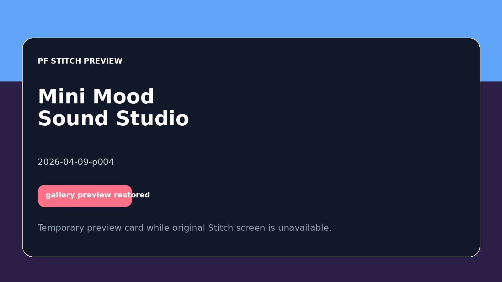

PF SAFE DEMO · 2026-04-09-p004
Mini Mood Sound Studio
A playful ambient-focus app that mixes desk scenes and layered sounds into a shareable mood setup.
ingest status
Imported from Stitch exportThe approved Stitch screen is now stored locally and published through a PF-safe wrapper for stable preview and hosting.
- Source preserved as local artifact
- Public demo path avoids remote CDN dependency
- Preview uses the shipped Stitch screen
